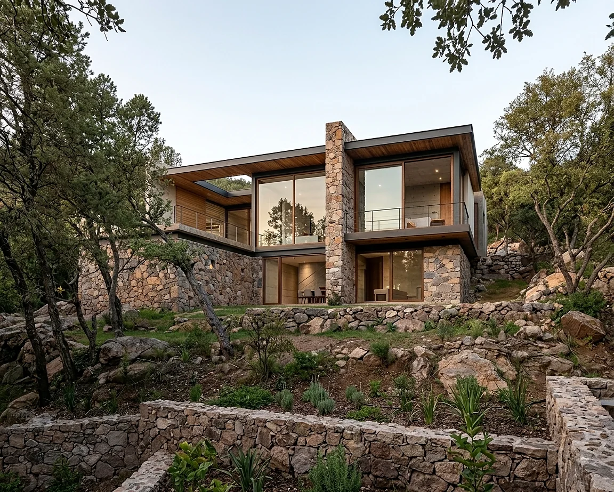

Orientación e implantación
Ubicamos espacios, aperturas y volúmenes para aprovechar las mejores condiciones del terreno y reducir exposiciones desfavorables.
La arquitectura bioclimática aprovecha las condiciones del terreno y del clima para mejorar el confort interior mediante decisiones de diseño pasivo.
Antes de depender de equipos o tecnologías, estudiamos la orientación, el recorrido solar, los vientos, las temperaturas y el contexto. Con esa información definimos cómo implantar la vivienda, protegerla del calor, captar luz natural y facilitar la ventilación.
No existe una receta universal. Seleccionamos las estrategias según el clima, el terreno, el uso de los espacios y las prioridades de cada proyecto.
Ubicamos espacios, aperturas y volúmenes para aprovechar las mejores condiciones del terreno y reducir exposiciones desfavorables.
Diseñamos aleros, parasoles, remetimientos y vegetación de acuerdo con el recorrido del sol y la orientación de cada fachada.
Estudiamos entradas, salidas y recorridos del aire para favorecer la ventilación cruzada cuando las condiciones lo permiten.
Buscamos luz útil y uniforme, cuidando el deslumbramiento y las ganancias térmicas excesivas.
Definimos muros, cubiertas, aislamiento y acabados considerando inercia térmica, durabilidad y disponibilidad regional.
Integramos sombra, vegetación y espacios exteriores para mejorar la relación entre la vivienda y su entorno inmediato.
Integramos el análisis bioclimático al desarrollo arquitectónico para que las estrategias formen parte del proyecto y no sean elementos agregados al final.

Reunimos información sobre orientación, topografía, asoleamiento, temperaturas, vientos, vistas y construcciones vecinas.
Identificamos los espacios prioritarios, horarios de uso y necesidades particulares para establecer criterios de diseño.
Definimos implantación, protecciones solares, aperturas, ventilación, iluminación y criterios de la envolvente.
Incorporamos las estrategias a la distribución, volumetría, fachadas y materialidad para conservar la unidad del proyecto.
Comparamos alternativas y afinamos decisiones en función del desempeño esperado, el presupuesto y la viabilidad constructiva.
Traducimos los criterios en planos y especificaciones, y podemos dar continuidad durante el proyecto ejecutivo y la construcción.
Una buena estrategia bioclimática busca reducir cargas innecesarias y mejorar la experiencia cotidiana de los espacios.
Espacios con una respuesta más adecuada frente al calor, el frío y las variaciones exteriores.
El diseño pasivo puede disminuir la necesidad de iluminación y climatización artificial.
Mayor acceso a luz natural, aire y una relación más agradable entre interiores y exteriores.
Decisiones durables que consideran operación, mantenimiento y comportamiento ambiental de la vivienda.
El desempeño final depende del clima, la ejecución, los materiales, los sistemas instalados y los hábitos de uso. Los alcances y métodos de evaluación se especifican en cada propuesta.
La forma, la orientación, las aperturas y los materiales trabajan juntos para responder a las condiciones del lugar.



Cuéntanos la ubicación, las características del terreno y lo que deseas construir. Te contactaremos para definir el siguiente paso.
Cuéntanos sobre tu proyecto Escribir por WhatsApp